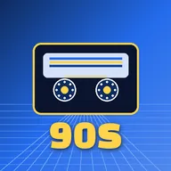
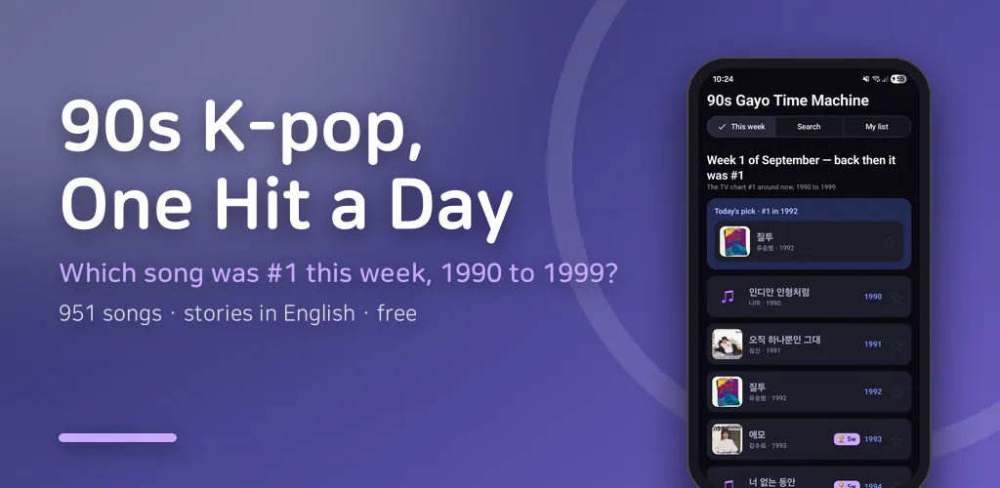
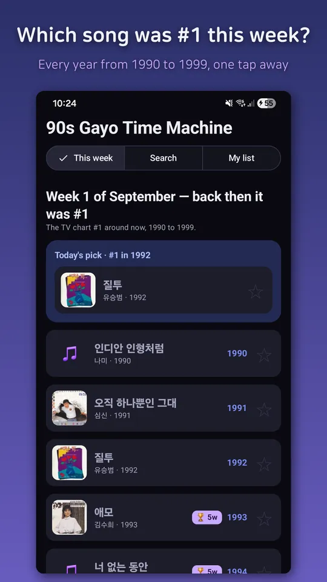
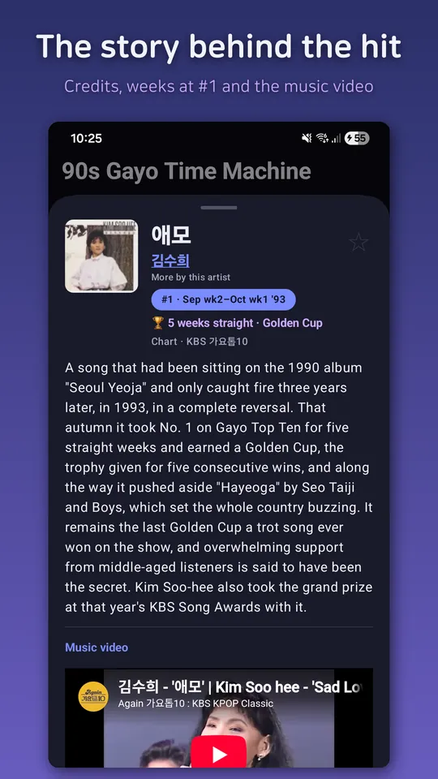
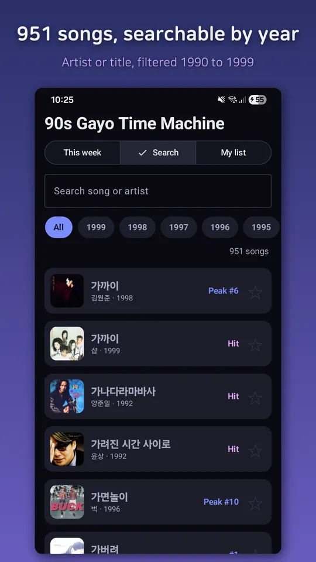
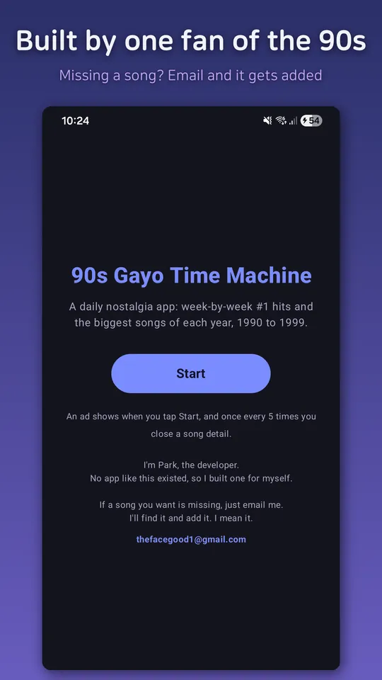

90s K-Pop Hits: Time Machine
Your daily dose of 90s K-pop. Relive the songs of 1990 to 1999, one hit a day.





About this app
"Today, back then, this song was #1."
Remember the songs that defined the Korean 90s?
90s Gayo Time Machine brings back the song that topped the chart this very week, plus the biggest songs of each year, from 1990 to 1999 — over 950 songs in all.
- This week, back then it was #1
- See what was #1 in 1992, 1993, … all the way to 1998 — for this same week.
- Every night at 10, we send you the day's throwback song.
- A full decade, 1990 to 1999
- Browse the weekly chart-toppers of all ten years, year by year.
- Plus the songs that never quite reached the top but defined their year — the eternal runners-up, the long-loved ballads, trot and rock.
- Tap a year in the Search tab to sweep through that whole year.
- Half-remember the title? Nicknames, abbreviations and English spellings all find the song.
- The story behind each song
- Short, casual notes on the song, the members, the moment — in English, for every one of the 950+ songs.
- These are written and fact-checked one by one, not generated.
- Lyricist, composer, album info and cover art, all in one place.
- Listen now
- Watch the original official stage video right inside the app.
- Jump to Melon or YouTube Music to keep listening.
- Videos play in the official YouTube player. Playback and album art need an internet connection.
- My list & sharing
- Star the songs you loved into your own throwback list.
- Turn a song into a card and hit a friend with "remember this?"
Seo Taiji and Boys, Kim Gun-mo, Shin Seung-hun, 015B, Clon, Cool, Fin.K.L… a time machine made of the songs of that era.
— An internet connection is required to play videos and load album art. Free app, supported by ads.
Android · free with ads · Developer: RealTunaLove · Store listing in 17 languages